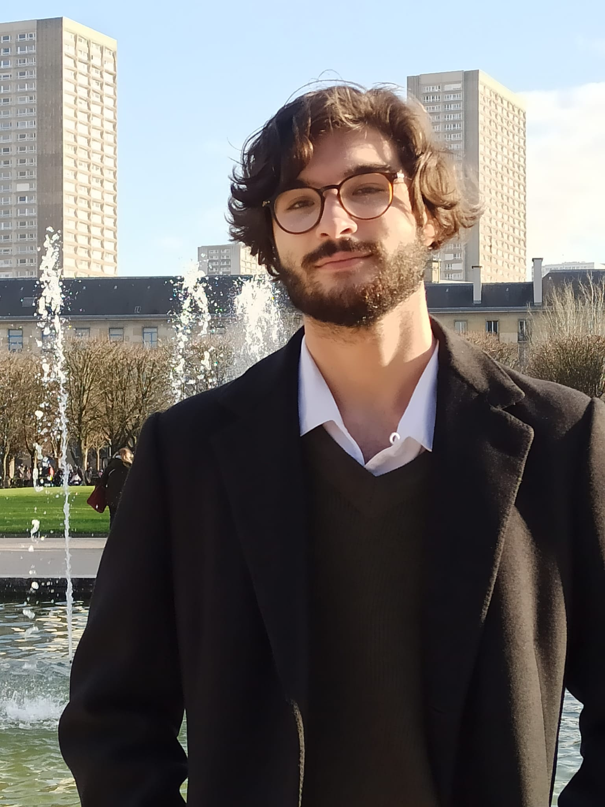

Prof. Andreas Carlson
 I received my PhD from the Linne Flow Center at the Royal Institute of Technology and did my post-doc at the Wyss Institute at Harvard University.
I am fascinated by dynamic interface phenomena in engineering systems and biology, spanning from the dynamics of wetting droplets, flow of complex fluids, bubble traffic in microfluidic systems,
soft robotics or cell dynamics. I use mathematical modeling and numerical simulations in combination with experiments.
I received my PhD from the Linne Flow Center at the Royal Institute of Technology and did my post-doc at the Wyss Institute at Harvard University.
I am fascinated by dynamic interface phenomena in engineering systems and biology, spanning from the dynamics of wetting droplets, flow of complex fluids, bubble traffic in microfluidic systems,
soft robotics or cell dynamics. I use mathematical modeling and numerical simulations in combination with experiments.
Dr. Annette Cazabuiel
 I am a postdoc working on the capture of droplets by fog nets. The project is funded by the Research Council of Norway (NANO2021). I am also interested in the dynamics of flying seeds. During my PhD at Université de Paris, I performed experiments to study three different types of turbulence: hydrodynamic turbulence, wave turbulence, and integrable turbulence.
I am a postdoc working on the capture of droplets by fog nets. The project is funded by the Research Council of Norway (NANO2021). I am also interested in the dynamics of flying seeds. During my PhD at Université de Paris, I performed experiments to study three different types of turbulence: hydrodynamic turbulence, wave turbulence, and integrable turbulence.
Dr. Tak Shing Chan
 I am a researcher interested in problems of wetting dynamic, droplets, capillarity, micro-nano fluidics, dynamics of cell membranes. I use both analytical and numerical methods to study these problems in a project I am leading through the RCN.
I am a researcher interested in problems of wetting dynamic, droplets, capillarity, micro-nano fluidics, dynamics of cell membranes. I use both analytical and numerical methods to study these problems in a project I am leading through the RCN.
Dr. Bharti
I am a postdoc working on Dynamic wetting and adhesion on soft solids. The project is funded by the Research Council of Norway and led by Dr. T. S. Chan. I am interested in studying surface deformation of soft substrates. During my PhD at National Institute of Technology Patna, India, I have an analytic background. I used to give mathematical modeling of bacteria and viruses. Some of my research interest includes electrophoresis of hydrophobic soft particles and recently surface deformation of soft elastic/viscoelastic substrate. I am focused on analytical methods to study these problems.
Dr. Bidisha Bhatt
I am a postdoctoral research fellow in experimental fluid mechanics. I am working on a sustainability project connected with water harvesting. During my doctoral work at IIT Kanpur, India, I worked on the stability of thin liquid films, dewetting, and the role of various interfacial and intermolecular interactions. My research interest includes preparing nature-inspired surfaces for various applications, i.e., fog harvesting, electrowetting, manipulating liquids using various external stimuli, and the rheology of fluids.
Dr. Jingbang Liu
 I am a postdoc working on cell membrane modelling and other micro-nano scale fluid problems. The position is provided by the AUTORHYTHM project. Prior to this, I was a PhD student at the University of Warwick, working on modelling of nanoscale thin liquid films using the fluctuating hydrodynamics, molecular dynamics simulations, and the rare event theory.
We looked into the surface fluctuations of bounded thin films and the rare thermal fluctuation induced ruptures.
I am a postdoc working on cell membrane modelling and other micro-nano scale fluid problems. The position is provided by the AUTORHYTHM project. Prior to this, I was a PhD student at the University of Warwick, working on modelling of nanoscale thin liquid films using the fluctuating hydrodynamics, molecular dynamics simulations, and the rare event theory.
We looked into the surface fluctuations of bounded thin films and the rare thermal fluctuation induced ruptures.
Torstein Sæter
 My work is within several topics of fluid mechanics, among them elastohydrodynamic models, and free surface flows.
My PhD focuses on the applications of fluid mechanical models within geoscience, and numerically investigate the fracturing process driven by magma intrusion in the earth's crust.
My academical background is within marine hydrodynamics at NTNU, where I started to find interest in the numerical analysis of physical problems. In between finishing the master's thesis and starting on this PhD, I worked one year as a naval architect/structural engineer. The PhD is funded through the EarthFlow initiative.
My work is within several topics of fluid mechanics, among them elastohydrodynamic models, and free surface flows.
My PhD focuses on the applications of fluid mechanical models within geoscience, and numerically investigate the fracturing process driven by magma intrusion in the earth's crust.
My academical background is within marine hydrodynamics at NTNU, where I started to find interest in the numerical analysis of physical problems. In between finishing the master's thesis and starting on this PhD, I worked one year as a naval architect/structural engineer. The PhD is funded through the EarthFlow initiative.
Dr. Stephane Poulain
 I researcher with interest in interfacial fluid dynamics and its applications. The focus of my project is poroelasticity in the context of droplet transport, with the aim of developing efficient fog harvesting strategies. It is funded by the Research Council of Norway (NANO2021).
Before joining Oslo University, I studied Aerospace Engineering at ISAE-Supaero in France and obtained a Master of Science at MIT where I studied experimentally the physics of surface bubbles and evaporating drops.
I researcher with interest in interfacial fluid dynamics and its applications. The focus of my project is poroelasticity in the context of droplet transport, with the aim of developing efficient fog harvesting strategies. It is funded by the Research Council of Norway (NANO2021).
Before joining Oslo University, I studied Aerospace Engineering at ISAE-Supaero in France and obtained a Master of Science at MIT where I studied experimentally the physics of surface bubbles and evaporating drops.
Runepal (Vira) S. S. Dhaliwal
 I am a PhD student interested in the physics of biological systems. My academic background is in engineering and physics, and I have previously worked on fluid mechanics for aerospace applications as well as the transport of small particles in the mammalian cytoplasm.
In my current project, I am simulating the self-organisation of proteins during the formation of the immune synapse, which is essential for communication between cells in the immune system.
Fluid flow, membrane deformation as well as protein binding and transport are taken into account of in the mathematical model.
I am a PhD student interested in the physics of biological systems. My academic background is in engineering and physics, and I have previously worked on fluid mechanics for aerospace applications as well as the transport of small particles in the mammalian cytoplasm.
In my current project, I am simulating the self-organisation of proteins during the formation of the immune synapse, which is essential for communication between cells in the immune system.
Fluid flow, membrane deformation as well as protein binding and transport are taken into account of in the mathematical model.
Boxue Zheng
 I am a PhD student interested in problems of wetting on soft substrates. By utilizing analytical and numerical methods, I investigate the static deformation and dynamics of the soft materials driven by capillarity.
The project is funded by the Research Council of Norway leaded by Dr. Tak Shing Chan, who is also my main PhD supervisor.
Before joining the Oslo University, I worked on mesh-less numerical methods for multi-phase flow simulations and received my Master and Bachelor degrees from Dalian University of Technology in China
I am a PhD student interested in problems of wetting on soft substrates. By utilizing analytical and numerical methods, I investigate the static deformation and dynamics of the soft materials driven by capillarity.
The project is funded by the Research Council of Norway leaded by Dr. Tak Shing Chan, who is also my main PhD supervisor.
Before joining the Oslo University, I worked on mesh-less numerical methods for multi-phase flow simulations and received my Master and Bachelor degrees from Dalian University of Technology in China
Henri Fabre
 I am a PhD student with interest in experimental fluid dynamics. My PhD focuses on the experimental study of fog nets as a way to improve water access in arid regions of the world funded throuh as Sustainability project. Before joining UiO, I received my Master of Engineering degree at the ESPCI-PSL in Paris, where I studied a broad range of subjects in Physics, Chemistry and Biology. I also have previous research experience in material science and microfluidic.
Co-supervised PhD students
Harish Pruthviraj Jain (PhD student with Dr. Luiza Angheluta) -- biophysics
Alumni
Dr. Sami Al-Izzy -- post-doc (2024) membrane biophysics and active solids. Currently post-doc at UNSW
Dr. Vanessa Kern -- post-doc (2021-2023) droplets and fog nets. Currently post-doc at Cornell University
Dr. Christian Pedersen -- PhD student, post-doc (2017-2023) thin films. Currently at Expert Analytics
Dr. Mathijs Janssen -- post-doc (2020-2022) soft matter/biophysics. Currently Associate Professor (tenured) at NMBU
Dr. Chunheng Zhao -- PhD student (2022) phase field modelling. Currently Post-doc at d'Alembert Institute
Dr. Blandine Feneuil -- post-doc (2019-2021) complex fluids. Currently Research Scientist (tenured) at SINTEF
Dr. Susanne Liese -- post-doc (2017-2020) membrane modelling. Currently Post-doc at the Max Planck Institute for the Physics of Complex Systems
Dr. Rossana M. Rojas -- PhD student (2017-2020) diffuso-kinetics of membranes. Currently at Consigli
Dr. Yuli Wang -- post-doc (2016) droplet impact on structured substrates. Currently at Excillum
Previous students and visitors
Sif F. Arnbjerg-Nielsen, DTU, 2024
Camille Renaud, M2 student, ESPCI Paris, 2023
Simon Negre, M2 student, ESPCI Paris, 2022
Apolline Faidherbe, M2 student, ESPCI Paris, 2019
Richard A. Fauli, Master Student, three-phase flow simulations, 2019
Rasmus N. Tjørstad, Master Student, Friction in cross-country skiing, 2018
Fan Yang, visiting PhD student from Princeton University, 2018
Estella Yu, visiting PhD student from Princeton University, 2018